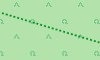
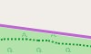
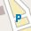

Flächen
| Wohngebiet |  |
Militärisch genutztes Gebiet, Kasernen, Truppenübungsplätze, usw. | |
 |
Parkplatz | Handel, Einkaufszentrum oder Bereich mit überwiegend Einzelhandelsgeschäften | |
 |
Yachthafen, Liegeplatz für Jachten und Motorboote |  |
Schule, Hochschule, Universität, Campus oder Gebäude |
| Krankenhaus |  |
Industriegebiet oder Bahngelände , Fabriken und Lager bzw. Gleise und Bahnanlagen | |
| Naturschutzgebiet |  |
Spielplatz für Kinder | |
 |
Campingplatz, Stellplatz für Wohnmobile |  |
Bauernhof, Fläche mit Gebäuden wie Wohnhäusern, Ställen, Fahrzeughallen, usw. |
 |
Rohstoffabbau oberirdisch, Steinbruch, Grube (Kies, Ton, ...), Tagebau |  |
Gebäude |
 |
Forst, landwirtschaftlich genutzer Wald;
Naturwald;
z. T. differenziert nach Misch-, Laub- oder Nadelwald |
 |
Wiese, meist außerorts |
 |
Golfanlage |  |
Kartenhintergrund |
 |
Friedhof |  |
Weinberg, Wengert |
 |
Park, Grünanlage | Gefahrenzone, Sperrgebiet | |
 |
Zoologischer Garten, Tierpark |  |
Kleingarten, Schrebergarten, Grabeland |
 |
Kulturland, landwirtschaftliche Flächen wie Äcker, Wiesen und Weiden. Diese Fläche ist identisch mit dem Kartenhintergrund. |  |
Kraftwerk, dient der Erzeugung von Strom oder Wärme; Umspannwerk, Umspannstation |
 |
Verwaltung, Büros |  |
Baugebiet (aber auch Brachland) |
 |
Deponie, Aufschüttung, Müllhalde |  |
Heide |
 |
Strand |  |
Schlick, Moor |
 |
Unkultiviertes Land, Unterholz, Busch, Gebüsch |  |
Weg, Platz oder Straße nur für Fußgänger , z. B. Einkaufspassage, Fußgängerzone |
 |
Spielfeld, Laufbahn |  |
Wasser allgemein, Meer, Seen, Teiche, Flüsse, Speicherbecken usw. |
 |
Alm, Bergwiese, Matten, Bereich oberhalb der Baumgrenze |  |
Sportanlage, Stadion |
 |
Geröll | Boden mit Sand bedeckt, kein oder nur spärlicher Bewuchs | |
 |
Fels | |
Feuchtgebiet, Sumpf, Moor, Ried, Marsch, Aue, Röhricht, Watt, Salzwiese |
 |
Gletscher, Gebiet, das ganzjährig mit Eis bedeckt ist |  |
Obstplantage, Obstgarten, Gemüseanbau, Anpflanzung zur Lebensmittelproduktion |
| Watt, Gebiet, das periodisch unter Wasser steht |
Bedeutung der Buchstaben auf den Flächen:
- B = Bau-, Brachland
- C = Camping, Caravan
- H = Handel
- I = Industrie, Gewerbe
- K = Krankenhaus
- N = Naturreservat
- R = Rohstoffabbau (oberirdisch)
- S = Schule, Hochschule
- V = Verwaltung, Büros
- Z = Zoo
Kulturland (Ackerland) ist in vielen Ländern die am häufigsten vorkommende Fläche (in Deutschland 52%). Diese Fläche wird nicht separat ausgewiesen, sondern ist identisch mit dem Kartenhintergrund.
Wald (Naturwald, Forst) bedeckt in vielen Ländern bedeutende Flächen (in Deutschland 31%) und ermöglicht somit eine gute Groborientierung.

Straßen und Wege
| Straßen: | |
 |
Autobahn, Straße mit baulich getrennten Fahrtrichtungen (im Allgemeinen Grünstreifen) und besonderen Nutzungsbeschränkungen (Einbahnstraße, Verbot für Fußgänger und Radfahrer). Typischerweise zwei Fahrspuren je Fahrtrichtung oder mehr und ein Standstreifen. |
 |
Autobahnanschlussstelle, typischerweise mit den gleichen Nutzungsbeschränkungen wie die Autobahn selber. |
 |
Autobahnähnliche Straße, aber keine Autobahn. |
 |
Bundesstraßenanschlussstelle, analog zu Autobahnanschlussstelle. |
 |
Bundesstraße, Hauptverbindungsstraße unter zentraler Verwaltung mit besonderer Kennzeichnung, die meist größere Städte verbindet und dem überregionalen Verkehr dient. Außerdem: Straßen mit übergeordneter Verkehrsbedeutung. |
 |
Land- oder sehr gut ausgebaute Kreisstraße (oder Auffahrt hierauf) Straße mit Mittellinie, die kleinere Städte oder größere Orte verbindet. Die Straße dient dem zwischenregionalen Verkehr. |
 |
Kreisstraße, sehr gut ausgebaute Gemeindeverbindungsstraße, die in erster Linie regionalen Verkehrsbedürfnissen dient. Wenig befahrene Vorfahrtstraße, die kleinere Orte verbindet. Innerstädtische Vorfahrtstraßen mit Durchfahrtscharakter. |
| Wohngebietsstraße, Straße an und in Wohngebieten, die keiner anderen Straßenklasse angehört. | |
| Nebenstraße, öffentlich befahrbare Nebenstraße mit einfachstem Ausbauzustand, typischerweise keine Mittellinie. Z.B. Gemeindestraßen mit Verbindungscharakter, die zu schmal sind, um als Kreisstraße zu gelten. |
|
 |
Zufahrtsstraße oder -weg, Zugang / Zufahrt zu Einrichtungen wie Sportanlagen, Stränden, Autobahnraststätten oder allgemein zu Gebäuden. |
 |
Verkehrsberuhigter Bereich, eine Straße in der auf spielende Kinder aufgepasst werden muss, Fußgänger bevorzugt behandelt werden und nur Schrittgeschwindigkeit erlaubt ist. |
 |
Straßen und Wege mit Zugangsbeschränkungen, diese Straßen und Wege werden andersfarbig gezeichnet: - Allgemeines Benutzungsverbot: Die Benutzung ist nicht erlaubt oder nicht möglich. - Privatstraße / -weg: Der Eigentümer erlaubt die Benutzer in der Regel nicht (Ausnahmen möglich). - Landwirtschaftlicher Verkehr: Die Benutzung ist nur für den "landwirtschaftlichen Verkehr" erlaubt. - Forstwirtschaftlicher Verkehr: Die Benutzung ist nur für den "forstwirtschaftlichen Verkehr" erlaubt. - Lieferverkehr frei: Die Benutzung ist nur zur Anlieferung von Waren zum Kunden erlaubt. |
| Sonstiges: | |
 |
Treppen, Treppen auf Fuß- oder Wanderwegen nur für Fußgänger. |
 |
Fußgängerstraße, -zone, Weg, Platz oder Straße auf der nur Fußgänger erlaubt sind (z.B. typisch für Einkaufspassagen). |
| Rad-, Fuß-, Reitwege, Pfade: Der Weg ist nicht breit genug für ein Fahrzeug. |
|
 |
Allgemeiner Radweg, hauptsächlich für Radfahrer. |
| Allgemeiner Fußweg, hauptsächlich für Fußgänger. | |
 |
Kombinierter Rad- und Fußweg, gemeinsame Nutzung durch Radfahrer und Fußgänger. |
 |
Reitweg, Weg nur für Pferd & Reiter. |
|  | Allgemeiner Weg oder Pfad, hier in der Bedeutung von Wanderweg / Pfad; nicht breit genug für zweispurige Fahrzeuge. |
 |
Allgemeiner Weg oder Pfad, Benutzung eingeschränkt |
| Wirtschafts-, Feld- oder Waldwege. Der Weg ist breit genug für ein Fahrzeug. Es werden drei Ausbauformen unterschieden: |
|
 |
Güteklasse 1, befestigter Weg (Asphalt, Beton, Pflastersteine, etc.). |
|  | Güteklasse 1 Benutzung eingeschränkt |
 |
Güteklassen 2,3 (sowie 0) 2 = Befestigter Weg (Schotter oder andere verdichtete Untergründe). 3 = Befestigter oder ausgebesserter Weg, der harten und weichen Untergrund enthält (z.B. Feinschotter-, Sand- oder Erdweg). 0 = Für den Weg ist keine Güteklasse angegeben. |
 |
Güteklassen 2,3 (sowie 0) Benutzung eingeschränkt |
 |
Güteklassen 4,5 4 = Unbefestigter Weg, hauptsächlich weiche Materialien, Pflanzenwuchs entlang der Spurmitte (z.B. Gras-, Sand- oder Erdweg). 5 = Unbefestigter Weg, Oberfläche besteht aus Sand, Erde etc., oft nur Abdruck im Gras, teilweise schwer von umgebendem Gelände unterscheidbar. |
 |
Güteklassen 4,5 Benutzung eingeschränkt |
| (Berg-)Wanderwege. Es werden drei Schwierigkeitsgrade unterschieden: |
|
 |
Wanderweg, T1 oder T2 T1 = Wanderweg T2 = klassischer Bergweg |
 |
Wanderweg, T3 oder T4 (anspruchsvolles Bergwandern bzw. Alpinwandern; erfordert entsprechende Erfahrung) T3 = anspruchsvoller Bergweg T4 = alpiner Wanderweg |
 |
Wanderweg, T5 oder T6 oder Klettersteig (anspruchsvolles Alpinwandern; erfordert entsprechende Erfahrung) T5 = anspruchsvoller, alpiner Wanderweg T6 = schwieriger, alpiner Wanderweg Klettersteig (Via Ferrata) = gesicherter Kletterweg |
Anmerkungen: Freizeitaktivitäten im Gebirge erfordern entsprechende Erfahrung und bergen Gefahren. Alleine mit dieser Karte sollte keine Bergtour geplant werden. Aus Sicherheitsgründen wird nicht über die (Berg-)Wanderwege der Kategorien 3-6 geroutet (Ausnahme: Freizeitkarte Alpen).

Points-Of-Interest (POIs)
Für die Points-Of-Interest (POIs) wurde ein allgemeiner Ansatz gewählt. D.h. es gibt nur wenige POIs die durch ein eigenes Symbol repräsentiert sind. Die meisten POIs werden durch ein kleines rotes Quadrat dargestellt. Weitere Informationen zu diesen POIs erhält man, indem man mit dem Cursor oder der Nadel auf den POI zeigt. POIs werden typischerweise nur dann angezeigt, wenn der POI auch mit einem Name oder einer Bezeichnung beschrieben ist.
 |
(i) (Touristen-) Information |  |
(signifikanter) Baum |
 |
Berggipfel (meist mit Höhenangabe) |  |
(I) Industrieananlage |
 |
(Q) Quelle |  |
Windkraftanlage |
 |
Mast (einer Hochspannungsleitung) | Flughafen | |
| Aussichtspunkt |  |
(€) Geldautomat (oder Bank) | |
 |
Krankenhaus |  |
Höhle |
 |
Polizeistation |  |
(U) U-Bahn-Eingang |
| (Zug-) Bahnhof |  |
allg. Funkmast, -turm | |
 |
(H) Haltestelle (Bus, Straßenbahn) |
 |
Ortsangabe Metropole |
 |
Ortsangabe Großstadt oder Kreisfreie Stadt |
 |
Ortsangabe Stadt, Stadtteil, Dorf, Weiler |
 |
(T) Tankstelle |  |
Geschäft (Art des Geschäfts) |
 |
Kneipe, Bar |  |
jüdischer Anbetungsort (z.B. Synagoge) |
| muslimischer Anbetungsort (z.B. Moschee) |
 |
christlicher Anbetungsort (z.B. Kirche) |
|
 |
(S) Schule |  |
(M) Museum |
| Unterstand, Schutzhütte |  |
Leuchturm | |
 |
Camping-, Caravanplatz |  |
Hotel, Motel |
 |
Gasthaus |  |
(Kinder-)Spielplatz |
| Restaurant (Art des Restaurants) |  |
(R) Rastplatz, -stätte | |
|  | Parken |  |
eingeschränktes Parken |
 |
(Autobahn-) Ausfahrt (mit Nummer und Bezeichnung) |
 |
allgemeiner Point-Of-Interest mit Art und Bezeichnung |
 |
(Straßen-) Poller |  |
Tor |
 |
Schranke |  |
Umlaufsperre |
 |
(militärischer) Bunker | Ruine | |
 |
Beobachtungsturm |  |
Mobilfunkmast |
| Zusätzlich im (Hoch-)Gebirge: | |||
| Alpin Hut (mit Bewirtung), Berghütte |
Alpin Hut (ohne Bewirtung), Selbstversorgerhütte |
||
 |
Wilderness Hut, einfache Selbstversorgerhütte |
 |
Basic Hut, Biwakhütte |
 |
Lean-To, offene Hütte mit Übernachtungsmöglichkeit |
 |
Scharte (Joch, Sattel) |
 |
Seilbahnstation | Pass |
Anmerkungen: Freizeitaktivitäten im Gebirge erfordern entsprechende Erfahrung und bergen Gefahren. Alleine mit dieser Karte sollte keine Bergtour geplant werden.